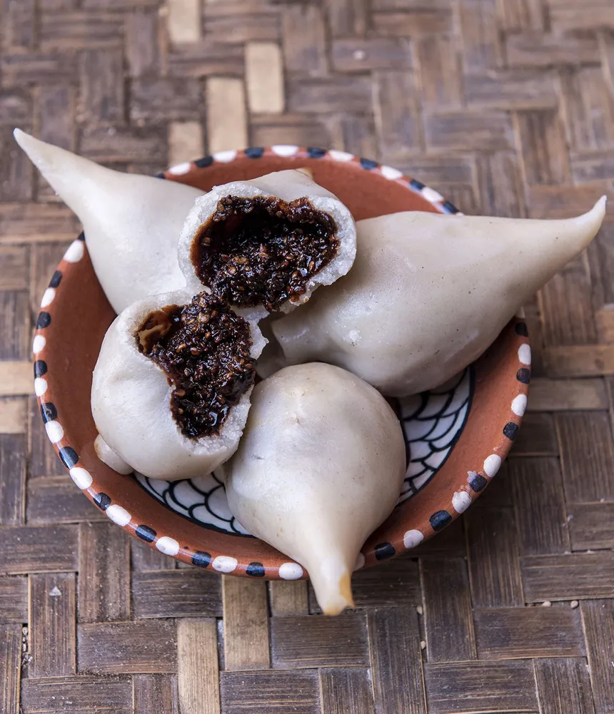

Yomari

Description
Yomari (योमरी) is a traditional Newari steamed dumpling from the Kathmandu Valley, made with a rice-flour dough wrapped around a sweet filling. It is the centerpiece of Yomari Punhi, the full-moon festival in December (Nepali month of Poush), marking the end of the rice harvest.
Ingredients
Dough (makes ~12)
- Fine rice flour (short-grain) 400 g
- Hot water 240–260 ml
- Salt a pinch
- Ghee (optional, for kneading) 1 tbsp
Chaku for traditionally filling
- Chaku (Nepali molasses / jaggery) 160–200 g
- Sesame seeds, toasted & coarsely crushed 45–60 g
- Grated coconut 20–30 g
- Ghee 1 tbsp
- Cardamom (crushed) ¼ tsp
Khuwa filling (alternative)
- Khuwa (reduced milk solids) 120 g
- Sugar 35 g
- Grated coconut 15 g
- Cardamom powder a pinch
Steps
- Mix rice flour with boiling water and ghee; knead into a soft, smooth dough.
- Melt chaku with a splash of water over low heat; stir in toasted sesame, coconut, and cardamom. Cool until it's a thick, sticky paste.
- Flatten walnut-sized dough pieces, spoon in the filling, and pinch into a fish-tail or cone shape.
- Steam for 10–15 minutes until the outer skin turns translucent.
Home